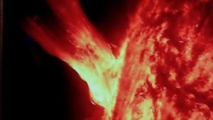

Une nouvelle ère pour la Terre de 5ème dimension
LA 5ème DIMENSION : UNE NOUVELLE ÈRE POUR LA TERRE
Nous rentrons dans l’Ère du Verseau, une période durant laquelle la densité et la matérialité se redéfinissent par elles mêmes. la Terre ayant rejoint l'axe central de notre galaxie. Les alignements de planètes du 21 décembre 2012 constatés par les scientifiques ont provoqué des ouvertures de portails énergétiques. Depuis lors de nouveaux paradigmes apparaissent dans divers domaines : temps fractal, physique et médecine quantiques, intelligence du cœur, modification d'ADN, changement de matrice pour la conscience collective, continuum espace-temps, éveil de conscience.
La révolution quantique révèle la transformation de la Terre
Conférence du 29 Novembre 2021 pour l'Association Communauté de l'Abondance - YOUTUBE - 400 personnes inscrites
> Extrait tournage Film DVD "Les Acteurs de la Vie" - Juin 2017
Nous vivons dans un espace-temps à trois dimensions mais la science quantique nous dit que la planète rentre actuellement dans la quatrième dimension.

Gregg Braden, un ingénieur de l'aérospatiale américain, a scientifiquement démontré que la Terre aurait traversé une ceinture de photons.
Ces photons semblent purifier l'atmosphère et l'astral, intensifier l'éther et provoquer une imbrication de ces 2 mondes.La science quantique démontre à présent que l'homme est constitué de photons qui relieraient notre conscience à la lumière. Ces photons, énergie "pure", viennent toucher le corps éthérique, bouleversant les corps émotionnel et mental et révélant blocages, blessures, mal être et mémoires. On déclare que l'homme est vibratoire en sus d'être matière, confirmant les propos des traditions ancestrales voire mystiques ; en réalité il l'a toujours été mais la conscience était voilée.Le Macrocosme et le Microcosme sont en pleine mutation « photonique ». L'homme apparaît comme un champ de conscience qui se déploie et révèle le champ vibratoire des corps subtils qui entoure le corps physique ; alors même que la Terre semble évoluer vers un champs spatio-temporel différent.Les nouvelles énergies nous impactent dans nos corps via les biophotons provoquant des bouleversements dans nos plans émotionnel et physique. Des blessures resurgissent, des mémoires généalogiques s'activent , des nouveaux symptômes apparaissent ...
Comment s'adapter à cette mouvance extérieure et intérieure et trouver sa place ?
Nous appréhendons notre environnement et nous même à partir de nos 5 sens et de notre conscience. Plus la conscience s'ouvre, plus les sens se déploient. Un sixième sens est en train d'apparaitre chez beaucoup de personnes.
Ce que cela va changer concrètement dans notre vie
Nous évoluons à travers nos émotions, nos blessures, nos conditionnements, attachements, systèmes de défense, nos peurs, nos colères, nos doutes. C'est le cerveau émotionnel qui, par habitude réactionnelle et refoulement, retient les mémoires cellulaires, alimente en énergie mentale les conditionnements et nous plonge dans des schémas répétitifs inconscients. Dans cette dimension, les énergies mentale et émotionnelle dominent.
La 4ème dimension, période transitoire, se perçoit à partir d'un sixième sens, type forte intuition, sensation de déjà vu, feeling, vision, fort ressentis… L’émotionnel est alors mis à l'épreuve car le mental ne peut plus bloquer les refoulements et conditionnements inconscients. La vérité de nos pensées, sentiments et actions se révèle à nous même et nous devenons conscients de nos actions passées et présentes. L'énergie se cristallise dans le corps provoquant des troubles psychologiques ou physiques type dépression ou « mal-à-dit ». Aujourd'hui la médecine quantique et l'épigénétique démontrent cela.
La 5ème dimension : C'est en cours…..! Face à une telle vibration il n'est plus possible pour le mental de retenir les vieux schémas et blessures. Pour vivre dans cette dimension, nos corps doit répondre à une certaine fréquence vibratoire et notre conscience acquérir certaines aptitudes.De plus en plus de personnes captent et voient des choses dites paranormales que le commun des mortels ne voyait pas jusqu'alors ( un proche décédé ), ne comprennent pas ce qui leur arrive et me contactent.
Tout s'accélère rapidement et intensément et cela va s'amplifier encore et encore. Ne serait-il pas souhaitable d'intégrer ce processus de changement et de s'éveiller au changement ? Et vous, que décidez vous pour vous ?
La Terre change de dimension et l'humanité doit changer de conscience
Depuis des décennies progressivement nous avons perdu le sens des valeurs. Aujourd'hui l'"Aventure COVID" nous place face à la réalité de la MATRICE et le réveil va être douloureux ! L'humain doit s'affirmer pour prendre sa souveraineté. Il est urgent de revenir à une conscience sage au service du vivant et de la paix. De belles initiatives se multiplient partout dans le monde : jardins collectifs, villes en transition, permaculture, énergie propre... sachant que la conscience collective évolue à une vitesse exponentielle depuis les 40 dernières années et va se déployer encore davantage. « C'est dans les utopies d’aujourd’hui que sont les solutions de demain » Pierre Rabbi
Cette mutation nous présente l'accès au champs des possibles à titre individuel et collectif. Saisissons-le !